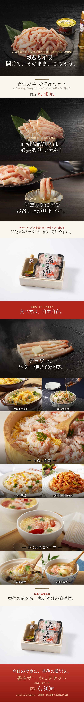

兵庫県・香住港で水揚げした香住ガニ（ベニズワイガニ）を、水揚げ当日に浜茹でし、職人が一つひとつ手作業でむき身に仕上げた「かに身セット」です。殻むき不要・解凍不要で、開けてそのままお召し上がりいただけます。棒身とほぐし身がたっぷり入った大容量600g（300g×2パック）に、コク深いかに味噌とさっぱりしたかに酢が付いています。ちらし寿司・かに丼・かに炒飯・かに雑炊・かにグラタン・バター焼きなど、アレンジも自由自在。ふるさとチョイス カニ部門ランキング第2位の人気商品です。
